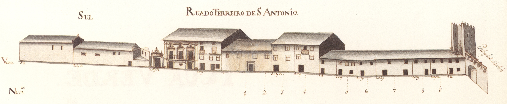
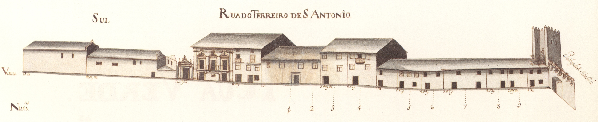

20 Terreiro de Sto. António e Postigo
Pequena artéria que ligava o terreiro de S. Tiago ao Postigo de S.Sebastião .
Mantendo o traçado de uma rua da cidade romana, já no séc. XIV nos aparece com os nomes
de rua Travessa e rua do Postigo .
Com a expulsão dos judeus a sua designação passará a ser de Santo António, a mesma
da rua que lhe era contígua.
Poucos anos mais tarde D. Diogo de Sousa criou os Estudos Gerais, que os seus sucessores
D. Henrique e D. Frei Bartolomeu dos Mártires muito protegeram;
a sua capela, com a invocação
de S. Paulo, faceava com o lado Sul do Terreiro, que aqui aparece como rua do Terreiro de Santo
António .
Ao lado da capela, não se sabe se relacionada com os Estudos Gerais, havia uma estupenda
casa seiscentista, com um belíssimo e muito raro trabalho de pedra nas janelas, e portão, lateral,
brasonado.
O impacto económico da saída dos muitos estudantes aqui hospedados, após a expulsão dos jesuítas em 1759 ,
e, consequente encerramento dos Estudos Gerais, ainda não foi estudado.
No último quartel do séc. XIX foi esta rua alargada desaparecendo a sua face Sul, bem com o «postigo»
da muralha .
A face Norte manteve-se excepto a casa mais recuada, que, nos inícios do séc. XIX, foi totalmente
alterada.
Actual rua de S. Paulo .
Visão original
 
 Visão atual


Casas
1 e 2 Fernando da Cunha Sottomayor 320 reis e 4 galinhas Encontram-se unidas, num só prazo, desde 1569 . A casa n.º 1 confronta, do nascente, com uma parte da casa que é foreira à comenda de S. Pedro de Merelim .
3 João Domingues, casado com Maria Vaz 320 reis e 4 galinhas O enfiteuta é da freguesia de Penso , concelho de Melgaço .
4 D. Doroteia de Vasconcelos, viúva de Francisca Ferreira da Costa 250 reis e 2 galinhas Confronta, do poente, com casa foreira ao mosteiro de Bouro .
5 D. Doroteia de Vasconcelos, viúva 170 reis e 1 galinha
6, 7, 8 e 9 D. Doroteia de Vasconcelos, viúva de Francisca Ferreira da Costa Foram construídas, depois do ano de 1683, no quintal da casa n.º 4 e pagavam foro a este prazo.
10 Quitéria Maria 300 reis e 2 galinhas A enfiteuta é filha de António de Araújo , escrivão das apelações, e de sua 2.ª mulher, Ursula de Araújo . A casa foi construída, depois do ano de 1557 , em pertenças do n.º 12, da Rua de D. Gualdim .
11 Corresponde ao n.º 11 da Rua de D. Gualdim , para onde tem frontaria e serventia principais.